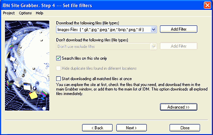
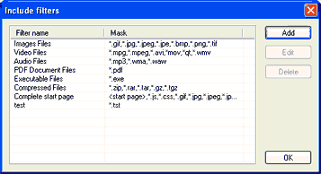

Step 4. Set file filters
On this step you should set file types, locations and other filters for downloaded files. You can set include and exclude filters for all file types.

If you are not satisfied with predefined filters, you can add/change them by using "Add Filter" button. After clicking on "Add Filter", the following "Edit Filters" dialog will appear.

For a filter that contains several file types, the file type elements should be separated from each other with commas without spaces. The asterisk wildcard (*) denotes any number of any characters. Using a wildcard you can create a pattern matching several file names for example "image*.jpg" pattern matches any jpg image filename starting from "image" word, like image01.jpg, image2.jpg, imageHot.jpg, and image735.jpg. It's possible to use "<start page>" expression in filters to specify the start page set on the first step.
If you check "Search files on this site only" box then the files located on other sites won't be shown in the main Grabber window, and the Grabber won't check the size and the type of these files.
It's very likely that during exploring a project, the Grabber will find many copies of the same file in different locations. If you check "Hide duplicate files found in different locations", the grabber will show only the first copy of the file it finds. The grabber treats a file as a copy if it has the same name and the same size. This option is disabled when "use original relative subfolders" option is enabled.
If you check "Start downloading all matched files at once" then all found files will be downloaded immediately. You may explore the site at first, check the files that you need, and download them in the main Grabber window, or add them to the main list of IDM.
"Advanced >>" button expands the dialog and let you set include and exclude filters for the paths/domains where the Grabber will download files from. You can use the asterisk wildcard (*) to denote any number of any characters. Also you can set the minimum and the maximum size of files to download.